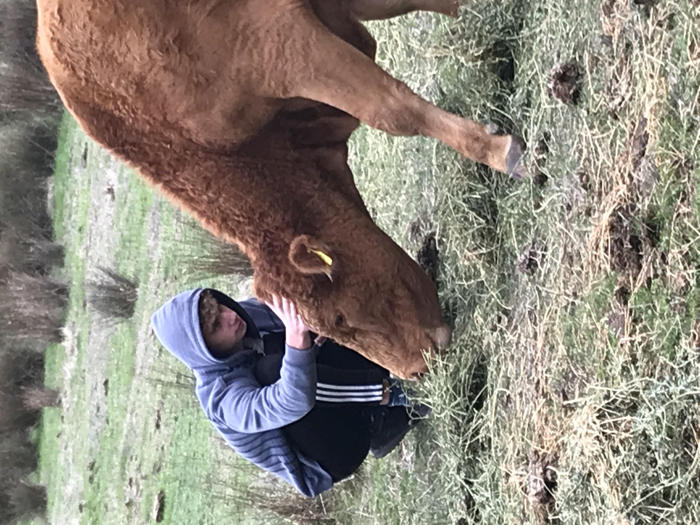
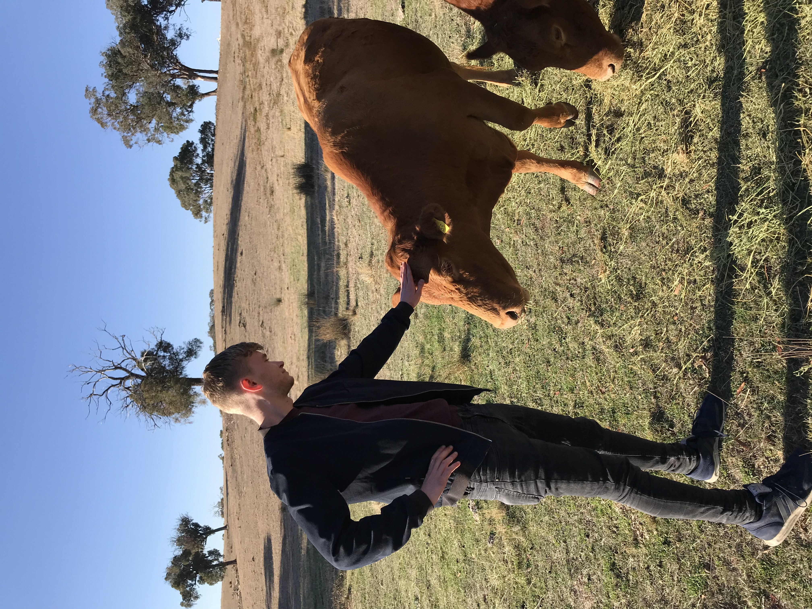
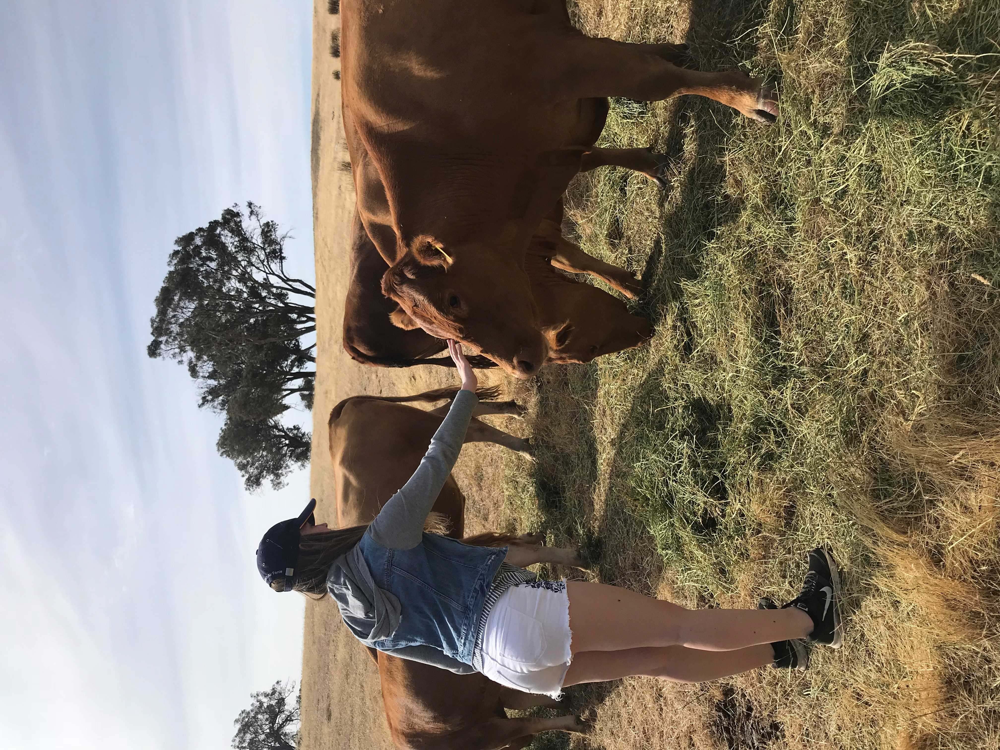
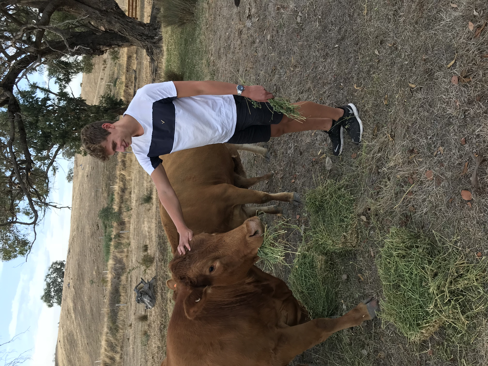

Our farming practices aim to produce happy and healthy beef cattle raised in a natural, stress free environment. To ensure we achieve these objectives, our cattle are:
- Quiet - South Devon cattle are renowned for their quiet temperament. This makes them very easy to handle at all times
- Healthy - Our cattle graze on quality pastures where fresh water is available. During cold weather or at times when fresh pasture is in short supply, our cattle are fed hay. We regularly conduct visual health checks on all animals especially during calving and seek veterinary assistance if needed.
- Carefully handled - During mustering, we do not use dogs, electric cattle prodders or anything else that may spook the cattle. In most cases, our cattle follow hay into the yards. They are a pleasure to work with.





